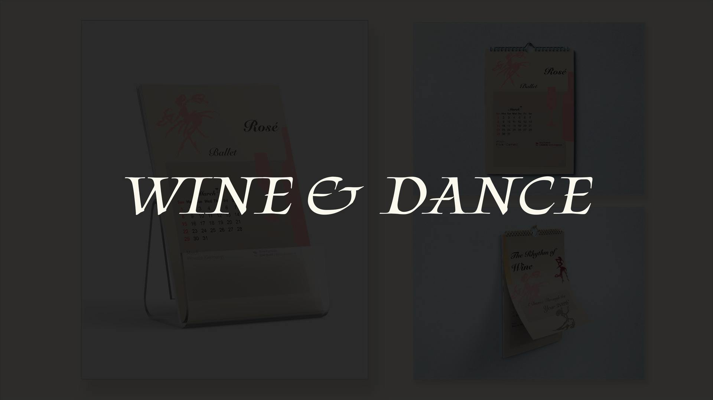
Wine & Dance
Calendar Design For Wine Education
This project explores a design question: How can a visual object support wine education without feeling like advertising?
The brief from Les Clos Elysées was a 2026 calendar that could hang on a customer’s wall for a year without selling anything, building taste literacy through repetition.

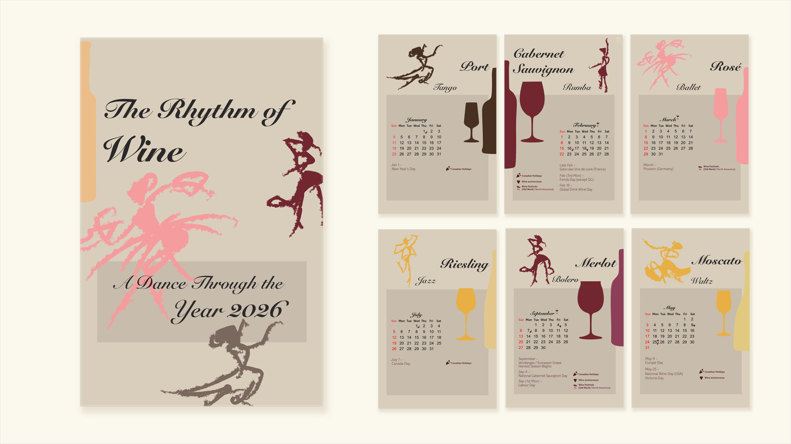
Concept
During my WSET studies, I began to notice that wine merchants do more than sell bottles. They educate customers, host tastings, and introduce wine culture gradually.
The result is a conceptual 2026 calendar that pairs wine categories with dance styles, translating flavour profiles into rhythm and movement.
The calendar becomes not only a promotional object, but also a cultural tool that invites people to experience wine through visual storytelling.
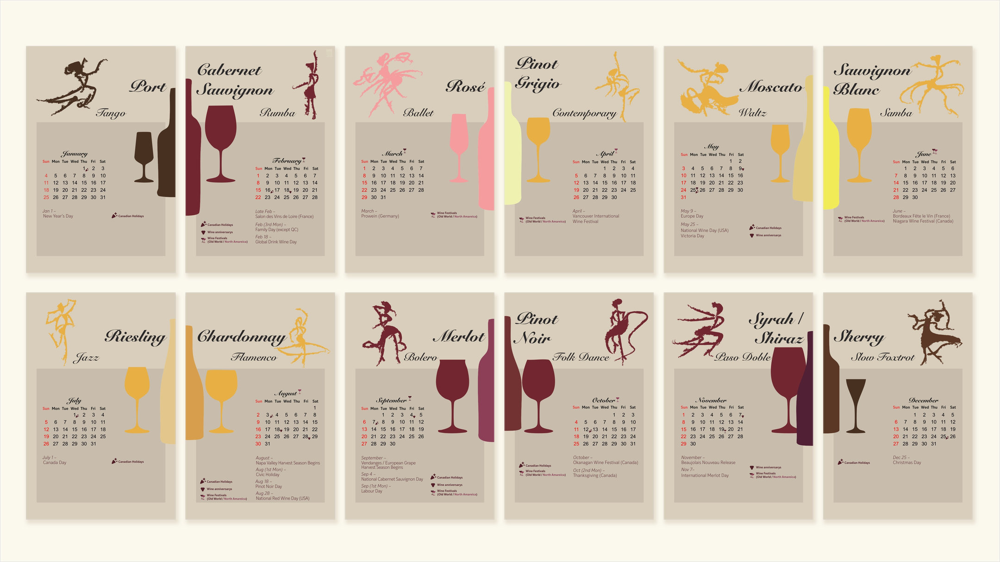
Twelve Pairings
One wine and one dance for each month, following the seasons: Port and Tango in January, then Cabernet Sauvignon and Rumba, Rosé and Ballet, Pinot Grigio and Contemporary, Moscato and Waltz, Sauvignon Blanc and Samba, Riesling and Jazz, Chardonnay and Flamenco, Merlot and Bolero, Pinot Noir and Folk Dance, Syrah or Shiraz and Paso Doble, and Sherry and Slow Foxtrot in December.
Each pairing turns a flavour profile into a movement. The illustrations and colours shift across the year, so the page on the wall works as a taste reference as much as a date-keeper.
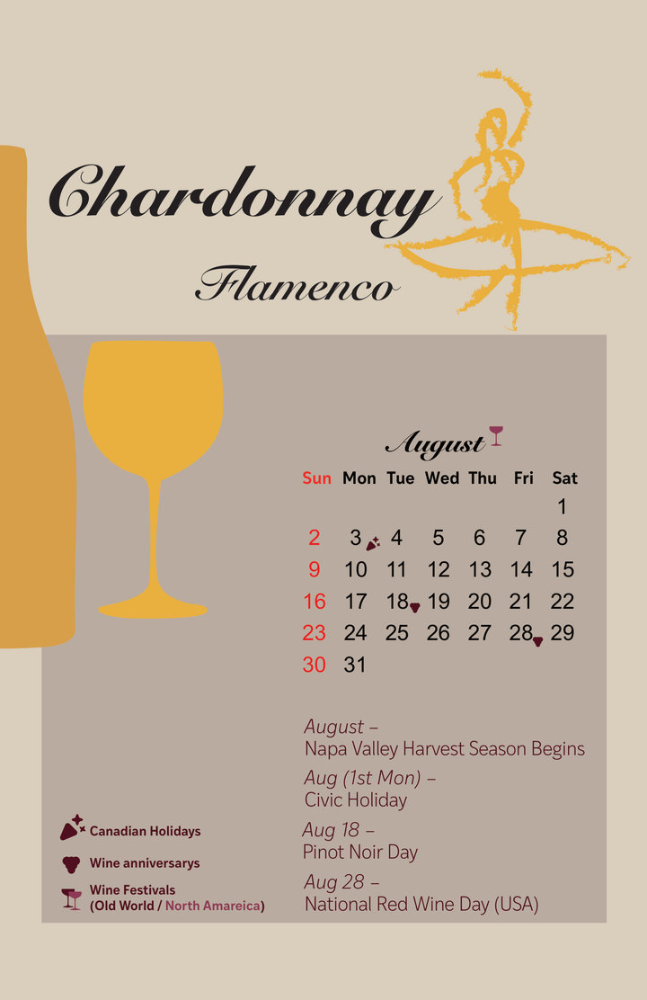
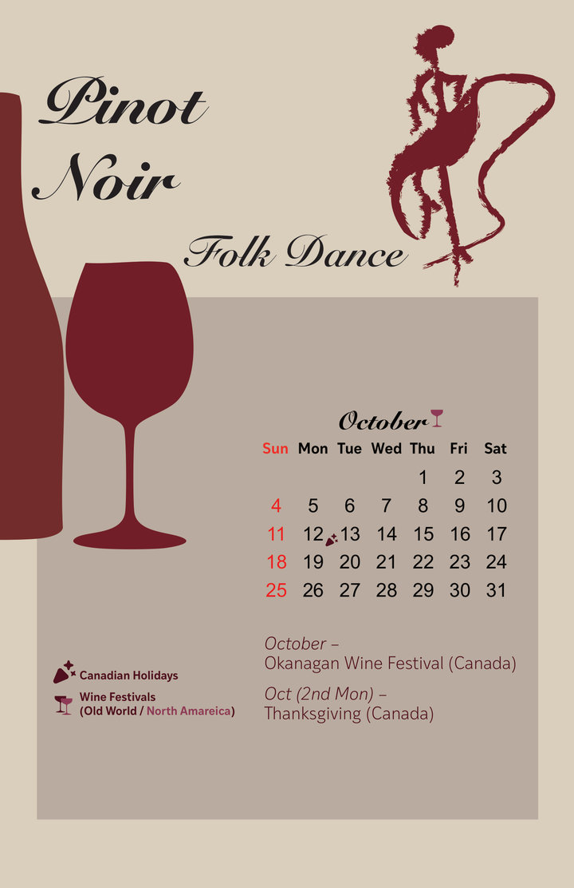
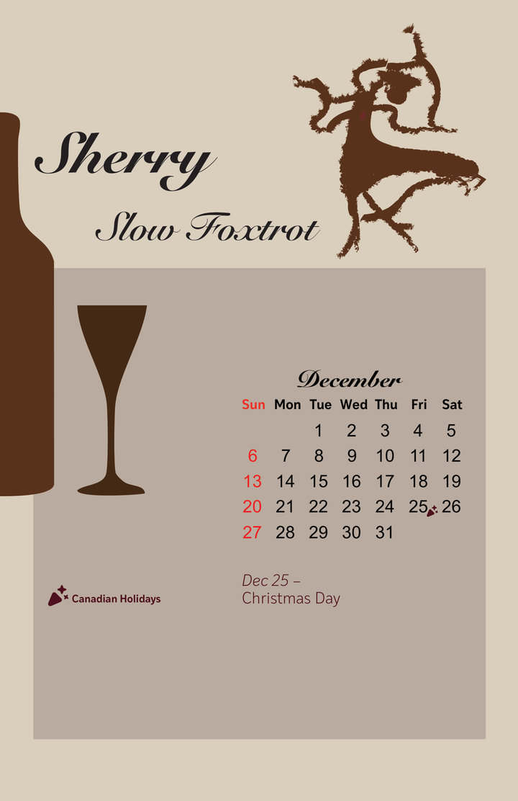
Month Pages
The dancers and the bottle and glass silhouettes are drawn by hand. Under each month’s grid, the page marks Canadian holidays, wine festivals and wine days, such as the start of the Napa Valley harvest, Pinot Noir Day and National Red Wine Day in August.
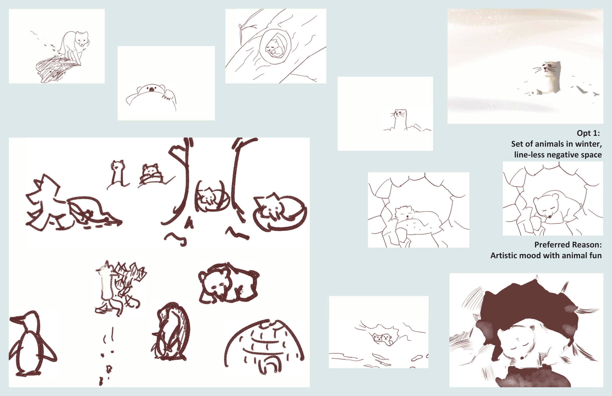
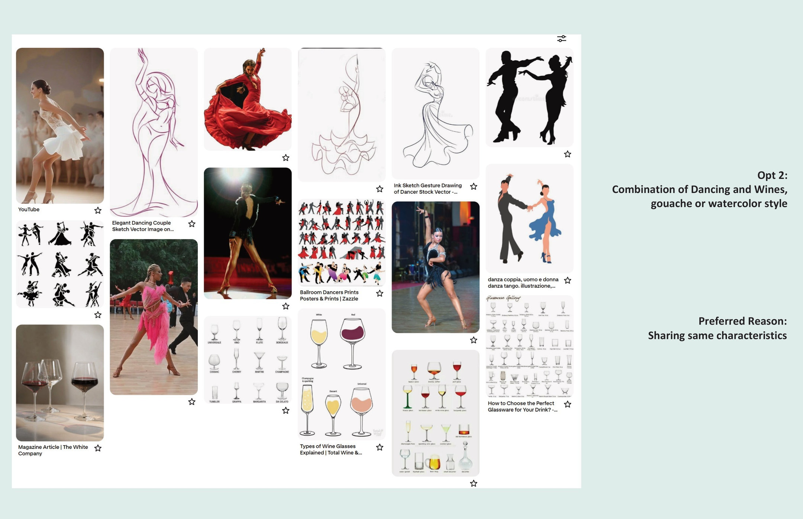
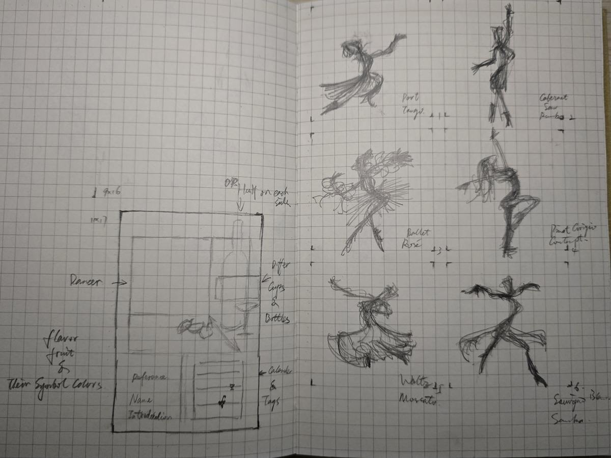
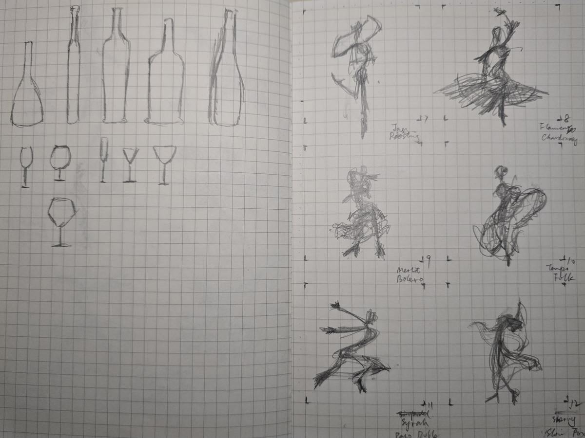
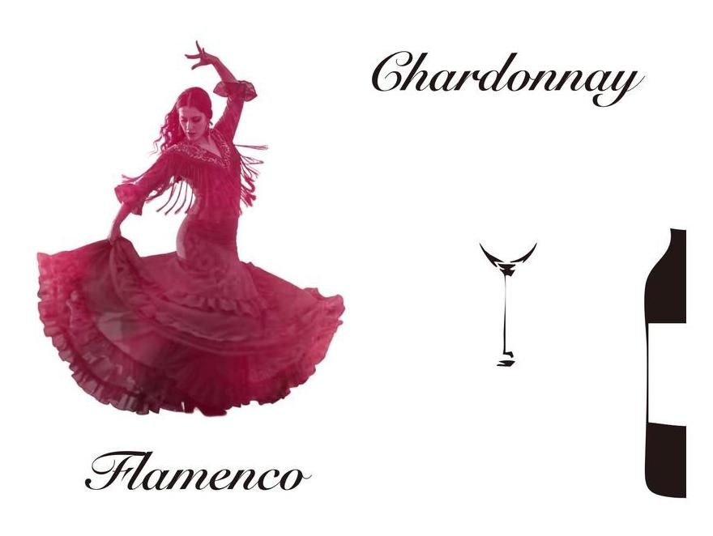
Process
Two directions came first: a set of animals in winter drawn in line-less negative space, and a pairing of dances and wines in a gouache or watercolour style. Each board noted its appeal, the animals for their mood and fun, dance and wine for the qualities they share. The dance and wine direction became the calendar.
Research on dance and wine set the mood. Each month started as a pencil sketch pairing one wine with one dance, from January to December.
An early test used a cut-out photo of a dancer. The final calendar moved to drawn silhouettes.